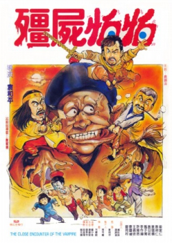

Also known as:Jiang shi pa pa (original title)
Country:TW, 72 minutes
Spoken languages:Mandarin, Cantonese
Genres:Action, Comedy, Horror
Director(s):Woo-Ping Yuen
Writer(s):Kam-Fai Law, Ka-Yan Leung, Cheung-Yan Yuen, Yat Chor Yuen
Video Codec:Unknown
Number: 248


Certification:
Storyline:
A small town is plagued by a hopping Chinese vampire. A clumsy traveling warrior becomes aware of the vampire's sinister presence however the skeptical locals and their arrogant Taoist priest discredit the traveler. Meanwhile, a g...
Cast:

Medium: Original DVD,
Comments: Part of: The Martial Arts Essentials Volume 4 - The Films of Yuen Wo Ping Series Two
Loaned: No
Aspect ratio: Unknown